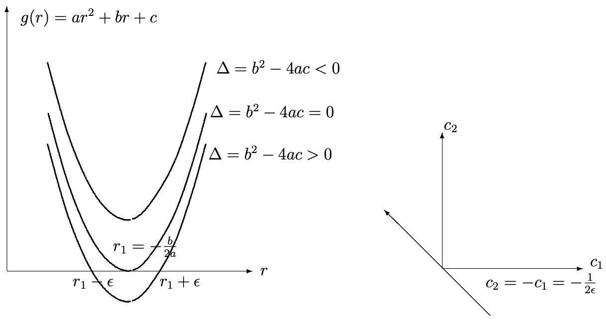

In this lecture we will briefly review some of the techniques for
solving First Order ODE and Second Order Linear ODE, including
Cauchy-Euler/Equidimensional Equations
1.1. First Order Ordinary Differential Equations:
1.1.1. Separable Equations:
(1.1) \[\begin{split}
\begin{eqnarray}
\frac{dy}{dx} & = & P(x)Q(y)\\
\int\frac{dy}{Q(y)} & = & \int P(x)\, dx+C\nonumber
\end{eqnarray}
\end{split}\]
Example 1.1
(1.2) \[\begin{split}
\begin{eqnarray}
\frac{dy}{dx} & = & \frac{4y}{x(y-3)}\nonumber\\
\left(\frac{y-3}{y}\right)\, dy & = & \frac{4}{x}\, dx\nonumber\\
y-3\ln |y| & = &4\ln |x|+C\\
y & = & \ln (x^4 y^3) +C\nonumber\\
Ax^4y^3 & = & \{\rm\ e\}^y\nonumber
\end{eqnarray}
\end{split}\]
1.1.2. Linear First Order Equations - The Integrating Factor:
(1.3) \[
\begin{equation}
y^\prime (x)+P(x)y=Q(x)
\end{equation}
\]
Can we find a function \(F(x)\) to multiply (4.3) by in order to turn
the left hand side into a derivative of a product:
(1.4) \[
\begin{equation}
Fy^\prime +FPy=FQ
\end{equation}
\]
(1.5) \[
\begin{equation}
(Fy)^\prime = Fy'+F'y=FQ
\end{equation}
\]
So let \(F'=FP\) which is a separable Eq.
(1.6) \[\begin{split}
\begin{eqnarray}
\frac{dF}{F(x)} &=& P(x)\, dx\Rightarrow\int\frac{dF}{F}=\int P(x)\,
dx+C\nonumber\\
\mbox{Therefore }\ln F &=& \int P(x)\, dx +C\\
\mbox{or }F &=& A\{\rm\ e\}^{\int P(x)\, dx}\quad\mbox{choose $A=1$}\nonumber\\
F &=& \{\rm\ e\}^{\int P(x)\, dx}\quad\mbox{integrating factor}\nonumber
\end{eqnarray}
\end{split}\]
Therefore
(1.7) \[\begin{split}
\begin{eqnarray}\begin{array}{c}
\{\rm\ e\}^{\int P(x)\, dx}y'+\{\rm\ e\}^{\int P(x)\, dx}P(x)y=\{\rm\ e\}^{\int
P(x)\, dx}Q(x)\\
{(\{\rm\ e\}^{\int P(x)\, dx}y)}^\prime =\{\rm\ e\}^{\int P(x)\, dx}Q(x)\\
y(x)=\{\rm\ e\}^{-\int P(x)\, dx}\left\{ \int \{\rm\ e\}^{\int^x P(t)\,
dt}Q(x)\, dx+C\right\}\end{array}
\end{eqnarray}
\end{split}\]
Example 1.2
(1.8) \[
\begin{equation}
y'+2y=0 \label{EG1}
\end{equation}
\]
(1.9) \[\begin{split}
\begin{eqnarray*}\begin{array}{c}
F(x)=\{\rm\ e\}^{2x}\Rightarrow\{\rm\ e\}^{2x}y'+\{\rm\ e\}^{2x}2y={(\{\rm\ e\}^{2x}y)}^\prime
=0\\
\{\rm\ e\}^{2x}y=c\\
y(x)=C\{\rm\ e\}^{-2x}\end{array}
\end{eqnarray*}
\end{split}\]
Example 1.3
(1.10) \[
\begin{equation}
\displaystyle\frac{dy}{dx}+\cot(x) y=5\{\rm\ e\}^{\cos x},\ y(\pi /2)=-4
\end{equation}
\]
(1.11) \[\begin{split}
\begin{eqnarray}\begin{array}{lclclcl}
P(x)&=&\cot x \quad Q(x)&=&5\{\rm\ e\}^{\cos x}&&\\
F(x)&=&\{\rm\ e\}^{\int \cot x\, dx}&=&\{\rm\ e\}^{\ln(\sin x)}&=&\sin
x\end{array}
\end{eqnarray}
\end{split}\]
(1.12) \[\begin{split}
\begin{eqnarray}\begin{array}{c}
\mbox{Therefore }\sin(x) y^\prime + \cos(x) y={(\sin(x) y)}^\prime =5\{\rm\ e\}^{\cos x}\sin x\\
\\
\sin(x) y=-5\{\rm\ e\}^{\cos x}+C\\
\\
y(x)= - \frac{5\{\rm\ e\}^{\cos x}-C}{\sin x}\\
\\
-4=y(\pi /2)= - \frac{5-C}{1}\Rightarrow C=1\\
\\
\mbox{Therefore }y(x)=\frac{1-5\{\rm\ e\}^{\cos x}}{\sin x}
\end{array}
\end{eqnarray}
\end{split}\]
1.2. Second Order Constant Coefficient Linear Equations:
(1.13) \[\begin{split}
\begin{eqnarray*}\begin{array}{c}
Ly=ay^{\prime\prime}+by^\prime +cy=0\\
\mbox{Guess } y=\{\rm\ e\}^{rx}\quad y^\prime =r\{\rm\ e\}^{rx}\quad y^{\prime\prime}=r^2\{\rm\ e\}^{rx}\\
Ly=[ar^2+br+c]\{\rm\ e\}^{rx}=0 \ \mbox{provided} \ [ar^2+br+c]=0\end{array}
\end{eqnarray*}
\end{split}\]
Indicial Eq.:
(1.14) \[\begin{split}
\begin{eqnarray}\begin{array}{rcll}
g(r)=ar^2+br+c&=&0\quad &r_{1,2}= - \frac{b\pm\sqrt{b^2-4ac}}{2a}\\
\mbox{ or } g(r)=a(r-r_1)(r-r_2)&=&0&\end{array}
\end{eqnarray}
\end{split}\]
Case I: \(\Delta =b^2-4ac>0,r_1\not=
r_2,y(x)=c_1\{\rm\ e\}^{r_1x}+c_2\{\rm\ e\}^{r_2x}\) is the general solution.
Case II: \(\Delta =0\) , \(r_1=r_2\) , repeated roots
\(Ly=a(r-r_1)^2\{\rm\ e\}^{rx}=0\) . In this case obtain only one
solution \(y(x)=\{\rm\ e\}^{r_1x}\) . How do we get a second solution?

Fig. 1.1 Left Figure: Roots of the characteristic polynomial
\(g(r)=ar^2+br+c\) for the different cases of the discriminant
\(\Delta=b^2-4ac\) . We consider special solution, in which
\(g(r)=a(r-(r_1-\epsilon))(r-(r_1+\epsilon))=a[(r-r_1)^2-\epsilon^2]\approx
a(r-r_1)^2\) .
Right Figure: We consider the special solution
(\ref{eq:gen_pert_sol}) for the case in which the two parameters
\(c_1\) and \(c_2\) have been chosen to be
\(c_2=-c_1=-\frac{1}{2\epsilon}\) , which represents a straight line in
the two-parameter \(c_1-c_2\) space
First Method: Perturbation of the double root:
Consider a
small perturbation (see figure Fig. 1.1 \(g(r)=a(r-(r_1-\epsilon))(r-(r_1+\epsilon))=a[(r-r_1)^2-\epsilon^2]\approx
a(r-r_1)^2\) . In this case the two, very close but distinct, roots of
\(g(r)=0\) are given by:
(1.15) \[
\begin{equation}
r= r_1+\epsilon \ \mbox{and}\ r=r_1-\epsilon
\end{equation}
\]
Now since we still have two distinct roots in this perturbed case,
the general solution is:
(1.16) \[
\begin{equation}
y(x)= c_1\{\rm\ e\}^{(r_1+\epsilon )x}+c_2\{\rm\ e\}^{(r_1-\epsilon )x}
\label{eq:gen_pert_sol}
\end{equation}
\]
Now choosing a special solution by selecting \(c_1 =
\frac{1}{2\epsilon}=-c_2\) , and we obtain a family of solutions that
depend on the small parameter \(\epsilon\) (see figure
(numref)perturbed_roots
(1.17) \[
\begin{equation}
y(x,\epsilon)=\frac{\{\rm\ e\}^{(r_1+\epsilon )x}-\{\rm\ e\}^{(r_1-\epsilon
)x}}{2\epsilon} \approx \left|\frac{\partial}{\partial
r}\{\rm\ e\}^{rx}\right|_{r=r_1} \label{eq:perturbed_sol_parameterized}
\end{equation}
\]
Now taking the limit as \(\epsilon \rightarrow 0\) by making use
of L’Hospital’s Rule, we obtain the following limiting solution:
(1.18) \[
\begin{equation}
y(x,\epsilon)= \{\rm\ e\}^{r_1x}\left(\frac{e^{\epsilon x}-\{\rm\ e\}^{-\epsilon
x}}{2\epsilon}\right)\stackrel{\epsilon\rightarrow 0}{\longrightarrow}
x\{\rm\ e\}^{r_1x}= \left|\frac{\partial}{\partial r}\{\rm\ e\}^{rx}\right|
_{r=r_1} \label{eq:perturbed_sol_limit}
\end{equation}
\]
Second Method: taking the derivative with respect to
\(r\) :
From (1.17) and
(1.18) we see that the new solution \( x
\{\rm\ e\}^{r_1 x}\) was obtained by taking the derivative of
\(y(x,r)=\{\rm\ e\}^{rx}\) with respect to \(r\) and then making the
substitution \(r=r_1\) . This is, in fact, a general procedure that we
will use later in the course. To see why this procedure works, let
(1.19) \[\begin{split}
\begin{eqnarray}\begin{array}{rcl}
y(r,x)&= &\{\rm\ e\}^{rx}\\
Ly(r,x)&= &a(r-r_1)^2\{\rm\ e\}^{rx}\\
L{\left[\frac{\partial y}{\partial r}(r,x)\right]}_{r=r_1} &=
&{\left[ 2a(r-r_1)\{\rm\ e\}^{rx}+a(r-r_1)^2 x\{\rm\ e\}^{rx}\right]}_{r=r_1}=0 \\
\mbox{Therefore }{\left[\frac{\partial y}{\partial
r}(r,x)\right]}_{r=r_1} &= &x\{\rm\ e\}^{r_1x}\mbox{ is also a solution.}
\end{array}\end{eqnarray}
\end{split}\]
Thus, to summarize, the general solution for the case of a double
root is:
(1.20) \[
\begin{equation}
y(x)=c_1\{\rm\ e\}^{r_1 x}+c_2x\{\rm\ e\}^{r_1 x}
\end{equation}
\]
Case III: Complex Conjugate Roots: \(\Delta =b^2-4ac<0\)
(1.21) \[\begin{split}
\begin{eqnarray}
r_{\pm} & = & -\frac{b}{2a}\pm \frac{i \sqrt{4ac-b^2}}{2a}=\lambda\pm i\mu\nonumber\\
y(x) & = &c_1\{\rm\ e\}^{(\lambda +i\mu )x}+c_2\{\rm\ e\}^{(\lambda -i\mu )x}\\
& = &\{\rm\ e\}^{\lambda x}\left[ A\cos\mu x+B\sin\mu x\right] .\nonumber
\end{eqnarray}
\end{split}\]
Example 1.4
(1.22) \[\begin{split}
\begin{eqnarray}
Ly& = &y^{\prime\prime}+y^\prime -6y=0\nonumber\\
y& = & \{\rm\ e\}^{rx}(r^2+r-6)=(r+3)(r-2)=0\\
y(x)& = &c_1\{\rm\ e\}^{-3x}+c_2\{\rm\ e\}^{2x}\nonumber
\end{eqnarray}
\end{split}\]
Example 1.5
(1.23) \[\begin{split}
\begin{eqnarray}
Ly& = &y^{\prime\prime}+6y^\prime +9y=0\nonumber\\
y& = &\{\rm\ e\}^{rx} (r+3)^2=0\\
y(x) & = & c_1\{\rm\ e\}^{-3x}+c_2x\{\rm\ e\}^{-3x}\nonumber
\end{eqnarray}
\end{split}\]
Example 1.6
(1.24) \[\begin{split}
\begin{eqnarray}\begin{array}{rcl}
Ly &= &y^{\prime\prime}-4y^\prime +13y=0\\
y &= &\{\rm\ e\}^{rx}:\quad r^2-4r+13=0\\
&&\quad r=\frac{4\pm\sqrt{16-52}}{2}=2\pm 3i\\
\mbox{Therefore }y(x)&= &\{\rm\ e\}^{2 x}\left[ A\cos 3x+B\sin 3x\right] .
\end{array}
\end{eqnarray}
\end{split}\]
1.3. Cauchy/Euler/Equidimensional Equations:
(1.25) \[
\begin{equation}
Ly=x^2y^{\prime\prime}+\alpha xy^\prime +\beta y=0.
\label{eq:EulerEquid}
\end{equation}
\]
Note
If we let \(t=\ln x\) or \(x=\{\rm\ e\}^t\) then
\(\displaystyle\frac{d}{dx}=\frac{d}{dt}\frac{dt}{dx}\rightarrow\frac{d}{dt}=x\frac{d}{dx}\) .
(1.26) \[
\begin{equation}
\frac{d^2}{dt^2}=x\frac{d}{dx}\left( x\frac{d}{dx}\right)
=x^2\frac{d^2}{dx^2}+x\frac{d}{dx}\Rightarrow
x^2\frac{d^2}{dx^2}=\frac{d^2}{dt^2}-\frac{d}{dt}
\end{equation}
\]
(1.27) \[\begin{split}
\begin{eqnarray}\begin{array}{rcl}
\mbox{Therefore}\quad\ddot{y}-\dot{y}+\alpha\dot{y}+\beta y&= &0\\
\ddot{y}+(\alpha -1)\dot{y}+\beta y&= &0\end{array}
\end{eqnarray}
\end{split}\]
(1.28) \[
\begin{equation*}
y=\{\rm\ e\}^{rt}\Rightarrow r^2+(\alpha -1)r+\beta
=0\quad\mbox{Characteristic Eq.}
\end{equation*}
\]
Back to (1.25) : Guess \(y=x^r\) , \(y^\prime
=rx^{r-1}\) , and \(y^{\prime\prime}=r(r-1)x^{r-2}\) .
(1.29) \[\begin{split}
\begin{eqnarray}\begin{array}{rcll}
\mbox{Therefore}\quad\left\{ r(r-1)+\alpha r+\beta\right\} x^r &= &0&\\
f(r)=r^2+(\alpha -1)r+\beta &= &0\quad &\mbox{as above.}\end{array}
\end{eqnarray}
\end{split}\]
(1.30) \[
\begin{equation}
r_\pm =\frac{1-\alpha\pm\sqrt{(\alpha -1)^2-4\beta}}{2}
\end{equation}
\]
Case 1: \(\Delta =(\alpha -1)^2-4\beta >0\) Two Distinct Real
Roots \(r_1\) , \(r_2\) .
(1.31) \[
\begin{equation}
y=c_1x^{r_1}+c_2x^{r_2}
\end{equation}
\]
If \(r_1\) or \(r_2<0\) then \(|y|\rightarrow\infty\)
as \(x\rightarrow 0\) .
Case 2: \(\Delta =0\) Double Root \((r-r_1)^2=0\) .
We obtain only one solution in this case:
(1.32) \[\begin{split}
\begin{eqnarray}\begin{array}{rcll}
y &= &c_1x^{r_1} &\\
\end{array}
\end{eqnarray}
\end{split}\]
To get a second solution we use second method introduced
above, in which we differentiate with respect to the parameter \(r\) :
(1.33) \[\begin{split}
\begin{eqnarray}\begin{array}{rcll}
\frac{\partial}{\partial r}L[x^r] &=
&L\left[\frac{\partial}{\partial r}x^r\right] =L[x^r\log x] &\\
\\
\frac{\partial}{\partial r}\left\{ f(r)x^r\right\} &= &f^\prime
(r)x^r+f(r)x^r\log x=0\quad &\mbox{since
$f(r)=(r-r_1)^2$.}\end{array}
\end{eqnarray}
\end{split}\]
General Solution: \(y(x)=(c_1+c_2\log x)x^{r_1}\) .
Check:
(1.34) \[\begin{split}
\begin{eqnarray}
L(x^{r_1}\log x) & = & x^2{(x^r\log x)}^{\prime\prime} +\alpha
x(x^r\log x)^\prime +\beta (x^r\log x)-\nonumber\\
& = & x^2\left[ r(r-1)x^r\log x+rx^{r-2}+(r-1)x^{r-2}\right]\\
& &\quad +\, \alpha x\left[ rx^{r-1}\log x+x^{r-1}\right] +\beta
(x^r\log x)\nonumber\\
& = & \left\{ r^2+(\alpha -1)r+\beta\right\} x^r\log x+\left\{
2r-1+\alpha\right\} x^r=0\nonumber
\end{eqnarray}
\end{split}\]
Case 3: \(\Delta = (\alpha -1)^2-4\beta <0\) .
(1.35) \[\begin{split}
\begin{eqnarray}
r_\pm & = & \frac{(1-\alpha )}{2}\pm i\frac{{[4\beta -(\alpha
-1)^2]}^{1/2}}{2} =\lambda\pm i\mu\nonumber\\
y(x) & = & c_1x^{(\lambda +i\mu )}+c_2x^{(\lambda -i\mu )}\quad\quad
x^r=\{\rm\ e\}^{r\ln x}\nonumber\\
& = & c_1\{\rm\ e\}^{(\lambda +i\mu )\ln x}+c_2\{\rm\ e\}^{(\lambda -i\mu )\ln x}\\
& = & x^{\lambda}\left\{ c_1\{\rm\ e\}^{i\mu\ln x}+c_2\{\rm\ e\}^{-i\mu\ln
x}\right\}\nonumber\\
& = & A_1x^\lambda \cos (\mu\ln x)+A_2x^{\lambda}\sin (\mu\ln x)\nonumber
\end{eqnarray}
\end{split}\]
Observation 1.1
If \(x<0\) replace by \(|x|\) .
The two solutions are linearly independent as we can verify by applying the Wronskian test, as follows:
(1.36) \[\begin{split}
\begin{eqnarray*}
w(y_1,y_2) & = & \left|\begin{array}{cc} y_1 &y_2\\
y_1^\prime &y_2^\prime\end{array}\right|
=y_1y_2^\prime -y_1^\prime y_2\quad\mbox{(look up the definition of the Wronskian)}\\
& = & \left\{ x^\lambda\cos (\mu\ln x)\right\}\left\{\log xx^\lambda\sin
(\mu\ln x)+x^{\lambda -1}\cos (\mu\ln x)\mu\right\}\\
& &\quad -\left\{ x^\lambda\log x\cos (\mu\ln x)-x^{\lambda -1}\sin (\mu\ln
x)\mu\right\}\left\{ x^\lambda\sin (\mu\ln x)\right\}\\
& = &\mu x^{2\lambda -1}\quad\mbox{independent for $x\not= 0$}
\end{eqnarray*}
\end{split}\]
Example 1.7
(1.37) \[\begin{split}
\begin{eqnarray}\begin{array}{c}
x^2y^{\prime\prime}-xy^\prime -2y=0,\quad y(1)=0,\quad y^\prime(1)=1\\
y=x^r\quad r(r-1)-r-2=0\quad r^2-2r-2=0\\
(r-1)^2=3\quad r=1\pm\sqrt{3}\end{array}\end{eqnarray}
\end{split}\]
(1.38) \[\begin{split}
\begin{eqnarray}
y & = & c_1x^{1+\sqrt{3}}+c_2x^{1-\sqrt{3}}\nonumber\\
y(1) & = & c_1+c_2=0\quad c_2=-c_1\nonumber\\
y(x) & = & c_1\left( x^{1+\sqrt{3}}-x^{1-\sqrt{3}}\right)\\
y^\prime (x) & = & c_1\left.\left[ \big( 1+\sqrt{3}\big)
x^{\sqrt{3}}-\big( 1-\sqrt{3}\big)
x^{-\sqrt{3}}\right]\right|_{x=1}=c_1 2\sqrt{3}=1\nonumber\\
\mbox{Therefore}\quad y(x) & = &\frac{1}{2\sqrt{3}}\left(
x^{1+\sqrt{3}}-x^{1-\sqrt{3}}\right) .
\end{eqnarray}
\end{split}\]
Example 1.8
(1.39) \[\begin{split}
\begin{eqnarray}\begin{array}{c}
x^2y^{\prime\prime}-3xy^\prime +4y=0\quad y(1)=1\quad y^\prime
(1)=0\\
y=x^r \implies r(r-1)-3r+4=r^2-4r+4=0\quad (r-2)^2=0\end{array}
\end{eqnarray}
\end{split}\]
(1.40) \[\begin{split}
\begin{eqnarray}
y(x) & = & c_1x^2+c_2x^2\log x\nonumber\\
y(1) & = & c_1=1\quad y^\prime (1)=\left[2x+c_2 \left( 2x\log
x+x\right)\right]_{x=1}\\
& &\quad\quad\quad\quad =2+c_2=0\nonumber\\
\mbox{Therefore}\quad y(x) & = & x^2-2x^2\log x.\nonumber
\end{eqnarray}
\end{split}\]